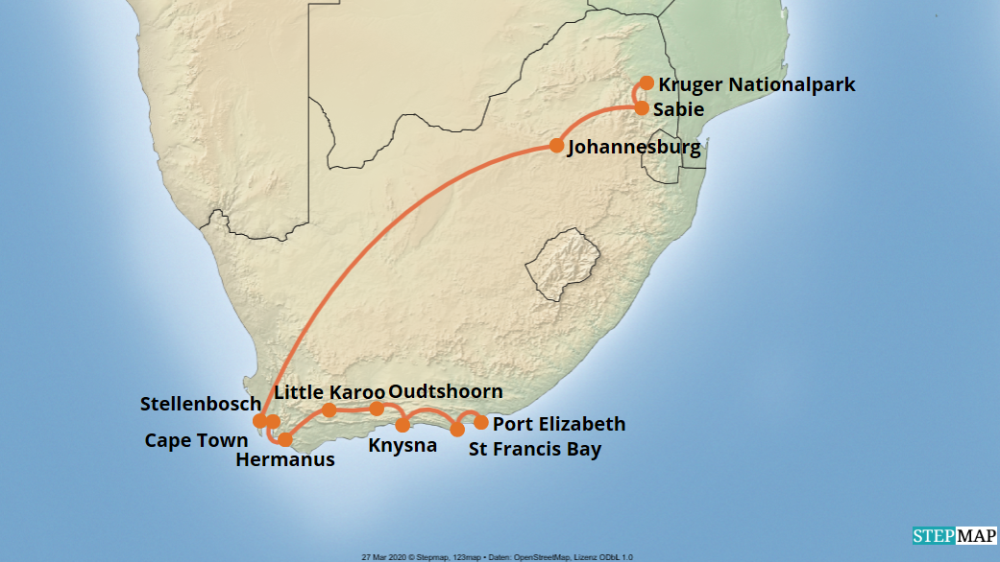

Unsere beliebtesten Südafrika-Touren
Ob Natur, Kultur oder Abenteuer. Bei uns finden Sie die passende Tour. Hier einige Highlights:
-
Garden Route Erlebnisreise
7 Tage entlang der Küste von Kapstadt bis Port Elizabeth. Inklusive Stopps in Knysna, Wilderness und Tsitsikamma. -
Safari im Kruger-Nationalpark
5 Tage in komfortabler Lodge mit täglichen Pirschfahrten. Ideal für Tierliebhaber und Fotofans. -
Kultur & Kulinarik in Stellenbosch
3 Tage voller Weinproben, lokaler Spezialitäten und historischer Architektur.
Tourenkarte
Verschaffen Sie sich einen Überblick über die Lage unserer wichtigsten Tourenziele:
